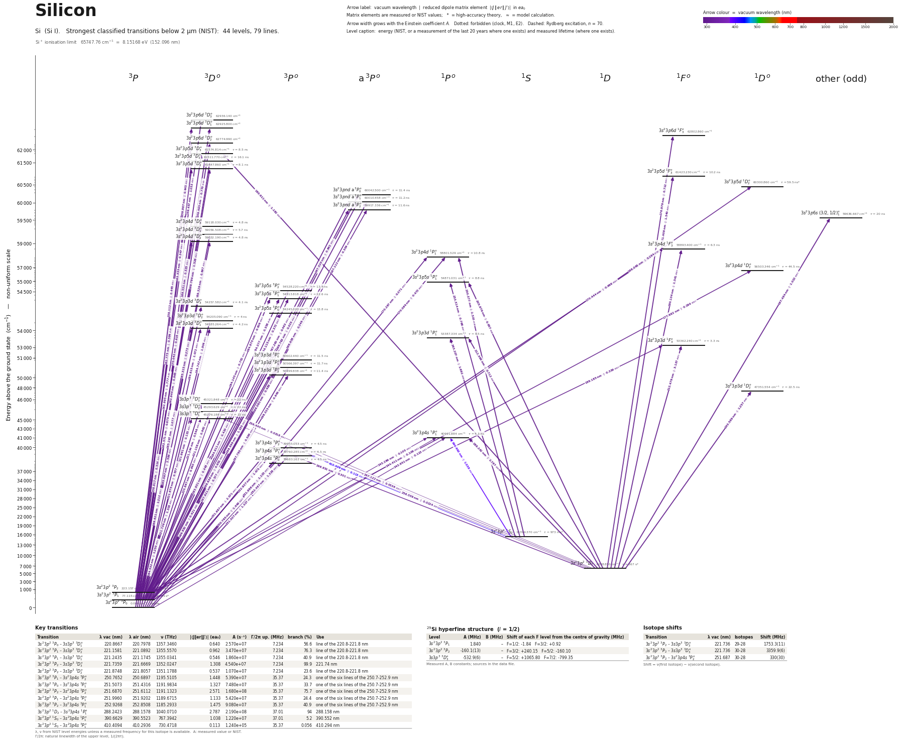

Silicon energy level diagram
Energy levels and transitions of neutral silicon (Si I): the 79 strongest classified lines below 2 µm from the NIST Atomic Spectra Database and the 44 levels they connect, each line with its vacuum wavelength, frequency and, for 79 of them, the reduced dipole matrix element derived from the NIST transition rate. Measured lifetimes, transition rates, hyperfine constants and isotope shifts from the literature are included, each with its citation.
Hover a line or a level to isolate it, click to keep it selected. Scroll to zoom, drag to move.

Download: diagram (PDF) diagram (SVG) transitions (CSV) levels (CSV) source code

Key transitions of silicon
| Transition | λ vac (nm) | λ air (nm) | ν (THz) | |⟨J‖er‖J′⟩| (ea₀) | A (s⁻¹) | Γ/2π up. (MHz) | branch (%) | Use |
|---|---|---|---|---|---|---|---|---|
| 3s23p2 3P0 – 3s3p3 3D°1 | 220.8667 | 220.7978 | 1357.3460 | 0.640 | 2.570e+07 | 7.234 | 56.6 | line of the 220.8-221.8 nm |
| 3s23p2 3P1 – 3s3p3 3D°2 | 221.1581 | 221.0892 | 1355.5570 | 0.962 | 3.470e+07 | 7.234 | 76.3 | line of the 220.8-221.8 nm |
| 3s23p2 3P1 – 3s3p3 3D°1 | 221.2435 | 221.1745 | 1355.0341 | 0.546 | 1.860e+07 | 7.234 | 40.9 | line of the 220.8-221.8 nm |
| 3s23p2 3P2 – 3s3p3 3D°3 | 221.7359 | 221.6669 | 1352.0247 | 1.308 | 4.540e+07 | 7.234 | 99.9 | 221.74 nm |
| 3s23p2 3P2 – 3s3p3 3D°2 | 221.8748 | 221.8057 | 1351.1788 | 0.537 | 1.070e+07 | 7.234 | 23.6 | line of the 220.8-221.8 nm |
| 3s23p2 3P1 – 3s23p4s 3P°2 | 250.7652 | 250.6897 | 1195.5105 | 1.448 | 5.390e+07 | 35.37 | 24.3 | one of the six lines of the 250.7-252.9 nm |
| 3s23p2 3P0 – 3s23p4s 3P°1 | 251.5073 | 251.4316 | 1191.9834 | 1.327 | 7.480e+07 | 35.37 | 33.7 | one of the six lines of the 250.7-252.9 nm |
| 3s23p2 3P2 – 3s23p4s 3P°2 | 251.6870 | 251.6112 | 1191.1323 | 2.571 | 1.680e+08 | 35.37 | 75.7 | one of the six lines of the 250.7-252.9 nm |
| 3s23p2 3P1 – 3s23p4s 3P°1 | 251.9960 | 251.9202 | 1189.6715 | 1.133 | 5.420e+07 | 35.37 | 24.4 | one of the six lines of the 250.7-252.9 nm |
| 3s23p2 3P2 – 3s23p4s 3P°1 | 252.9268 | 252.8508 | 1185.2933 | 1.475 | 9.080e+07 | 35.37 | 40.9 | one of the six lines of the 250.7-252.9 nm |
| 3s23p2 1D2 – 3s23p4s 1P°1 | 288.2423 | 288.1578 | 1040.0710 | 2.787 | 2.190e+08 | 37.01 | 94 | 288.158 nm |
| 3s23p2 1S0 – 3s23p4s 1P°1 | 390.6629 | 390.5523 | 767.3942 | 1.038 | 1.220e+07 | 37.01 | 5.2 | 390.552 nm |
| 3s23p2 1S0 – 3s23p4s 3P°1 | 410.4094 | 410.2936 | 730.4718 | 0.113 | 1.240e+05 | 35.37 | 0.056 | 410.294 nm |
λ, ν from NIST level energies unless a measured frequency for this isotope is available. A: measured value or NIST. Γ/2π: natural linewidth of the upper level, 1/(2πτ).
29Si hyperfine structure (I = 1/2)
| Level | A (MHz) | B (MHz) | Shift of each F level from the centre of gravity (MHz) |
|---|---|---|---|
| 3s23p2 3P1 | 1.840 | – | F=1/2: -1.84 F=3/2: +0.92 |
| 3s23p2 3P2 | -160.1(13) | – | F=3/2: +240.15 F=5/2: -160.10 |
| 3s3p3 3D°3 | -532.9(6) | – | F=5/2: +1065.80 F=7/2: -799.35 |
Measured A, B constants; sources in the data file.
Isotope shifts
| Transition | λ vac (nm) | Isotopes | Shift (MHz) |
|---|---|---|---|
| 3s23p2 3P2 – 3s3p3 3D°3 | 221.736 | 29-28 | 1753.3(11) |
| 3s23p2 3P2 – 3s3p3 3D°3 | 221.736 | 30-28 | 3359.9(6) |
| 3s23p2 3P2 – 3s23p4s 3P°2 | 251.687 | 30-28 | 330(30) |
Shift = ν(first isotope) − ν(second isotope).
Listed Si transitions below 2 µm
| Lower level | Upper level | λ vacuum (nm) | λ air (nm) | ν (THz) | Type | |⟨J‖er‖J′⟩| (ea₀) | A (s⁻¹) | Branching (%) | Source of matrix element / A |
|---|---|---|---|---|---|---|---|---|---|
| 3s23p2 3P0 | 3s23p6d 3D°1 | 158.9173 | – | 1886.4680 | E1 | 0.514 NIST | 4.440e+07 NIST | – | NIST ASD (accuracy E) |
| 3s23p2 3P1 | 3s23p6d 3D°1 | 159.1123 | – | 1884.1562 | E1 | 0.445 NIST | 3.320e+07 NIST | – | NIST ASD (accuracy E) |
| 3s23p2 3P2 | 3s23p6d 3D°3 | 159.4566 | – | 1880.0879 | E1 | 1.053 NIST | 7.910e+07 NIST | – | NIST ASD (accuracy D) |
| 3s23p2 3P1 | 3s23p6d 3D°2 | 159.4950 | – | 1879.6350 | E1 | 0.770 NIST | 5.920e+07 NIST | – | NIST ASD (accuracy E) |
| 3s23p2 3P2 | 3s23p6d 3D°2 | 159.8674 | – | 1875.2568 | E1 | 0.445 NIST | 1.960e+07 NIST | – | NIST ASD (accuracy E) |
| 3s23p2 3P0 | 3s23p5d 3D°1 | 162.5705 | – | 1844.0765 | E1 | 0.675 NIST | 7.160e+07 NIST | 100 | NIST ASD (accuracy E) |
| 3s23p2 3P1 | 3s23p5d 3D°1 | 162.7746 | – | 1841.7646 | E1 | 0.584 NIST | 5.340e+07 NIST | 86 | NIST ASD (accuracy E) |
| 3s23p2 3P1 | 3s23p5d 3D°2 | 162.9441 | – | 1839.8486 | E1 | 0.965 NIST | 8.730e+07 NIST | 70.7 | NIST ASD (accuracy C) |
| 3s23p2 3P2 | 3s23p5d 3D°3 | 162.9948 | – | 1839.2764 | E1 | 1.777 NIST | 2.110e+08 NIST | 100 | NIST ASD (accuracy C) |
| 3s23p2 3P2 | 3s23p5d 3D°2 | 163.3328 | – | 1835.4704 | E1 | 0.347 NIST | 1.120e+07 NIST | 9.07 | NIST ASD (accuracy D) |
| 3s23p2 3P1 | 3s23p5d 1D°2 | 166.0475 | – | 1805.4624 | E1 (intercombination) | 0.294 NIST | 7.670e+06 NIST | 45.6 | NIST ASD (accuracy D) |
| 3s23p2 3P0 | 3s23pnd a 3P°1 | 166.6376 | – | 1799.0683 | E1 | 0.346 NIST | 1.750e+07 NIST | 19.6 | NIST ASD (accuracy D) |
| 3s23p2 3P1 | 3s23pnd a 3P°0 | 166.7629 | – | 1797.7170 | E1 | 0.435 NIST | 8.270e+07 NIST | 94.3 | NIST ASD (accuracy E) |
| 3s23p2 3P1 | 3s23pnd a 3P°1 | 166.8520 | – | 1796.7564 | E1 | 0.421 NIST | 2.580e+07 NIST | 28.9 | NIST ASD (accuracy D) |
| 3s23p2 3P1 | 3s23pnd a 3P°2 | 167.1117 | – | 1793.9647 | E1 | 0.309 NIST | 8.300e+06 NIST | 9.63 | NIST ASD (accuracy D) |
| 3s23p2 3P2 | 3s23pnd a 3P°1 | 167.2596 | – | 1792.3782 | E1 | 0.463 NIST | 3.090e+07 NIST | 34.6 | NIST ASD (accuracy D+) |
| 3s23p2 3P2 | 3s23pnd a 3P°2 | 167.5205 | – | 1789.5865 | E1 | 0.862 NIST | 6.410e+07 NIST | 74.4 | NIST ASD (accuracy C) |
| 3s23p2 3P0 | 3s23p4d 3D°1 | 169.3293 | – | 1770.4696 | E1 | 0.697 NIST | 6.750e+07 NIST | 38.5 | NIST ASD (accuracy D+) |
| 3s23p2 3P1 | 3s23p4d 3D°1 | 169.5507 | – | 1768.1577 | E1 | 0.535 NIST | 3.970e+07 NIST | 22.6 | NIST ASD (accuracy D+) |
| 3s23p2 3P1 | 3s23p4d 3D°2 | 169.6207 | – | 1767.4287 | E1 | 1.212 NIST | 1.220e+08 NIST | 58.6 | NIST ASD (accuracy C) |
| 3s23p2 3P2 | 3s23p4d 3D°3 | 169.7941 | – | 1765.6239 | E1 | 1.528 NIST | 1.380e+08 NIST | 66.2 | NIST ASD (accuracy C) |
| 3s23p2 3P2 | 3s23p4d 3D°2 | 170.0419 | – | 1763.0505 | E1 | 0.615 NIST | 3.120e+07 NIST | 15 | NIST ASD (accuracy D+) |
| 3s23p2 3P0 | 3s23p4d 1P°1 | 170.0636 | – | 1762.8255 | E1 (intercombination) | 0.472 NIST | 3.060e+07 NIST | 33.1 | NIST ASD (accuracy D+) |
| 3s23p2 3P1 | 3s23p4d 1P°1 | 170.2869 | – | 1760.5136 | E1 (intercombination) | 0.371 NIST | 1.880e+07 NIST | 20.3 | NIST ASD (accuracy D) |
| 3s23p2 3P2 | 3s23p4d 1F°3 | 170.4442 | – | 1758.8896 | E1 (intercombination) | 0.668 NIST | 2.610e+07 NIST | 16.4 | NIST ASD (accuracy D+) |
| 3s23p2 1D2 | 3s23p6d 1F°3 | 176.9786 | – | 1693.9476 | E1 | 0.712 NIST | 2.650e+07 NIST | – | NIST ASD (accuracy D+) |
| 3s23p2 3P2 | 3s23p4d 1D°2 | 177.6824 | – | 1687.2376 | E1 (intercombination) | 0.284 NIST | 5.830e+06 NIST | 25.9 | NIST ASD (accuracy D) |
| 3s23p2 1D2 | 3s23p5d 3D°3 | 180.9105 | – | 1657.1317 | E1 (intercombination) | 1.182 NIST | 6.830e+07 NIST | 58.1 | NIST ASD (accuracy C) |
| 3s23p2 1D2 | 3s23p5d 1F°3 | 181.4079 | – | 1652.5873 | E1 | 1.540 NIST | 1.150e+08 NIST | 100 | NIST ASD (accuracy C) |
| 3s23p2 3P1 | 3s23p5s 3P°2 | 183.6510 | – | 1632.4031 | E1 | 0.448 NIST | 1.310e+07 NIST | 17.5 | NIST ASD (accuracy D+) |
| 3s23p2 3P0 | 3s23p5s 3P°1 | 184.1152 | – | 1628.2873 | E1 | 0.372 NIST | 1.500e+07 NIST | 18.9 | NIST ASD (accuracy D) |
| 3s23p2 3P2 | 3s23p5s 3P°2 | 184.1449 | – | 1628.0248 | E1 | 0.752 NIST | 3.670e+07 NIST | 49.2 | NIST ASD (accuracy D+) |
| 3s23p2 3P1 | 3s23p5s 3P°1 | 184.3770 | – | 1625.9754 | E1 | 0.558 NIST | 3.350e+07 NIST | 42.2 | NIST ASD (accuracy D+) |
| 3s23p2 3P0 | 3s23p3d 3D°1 | 184.5520 | – | 1624.4334 | E1 | 1.250 NIST | 1.680e+08 NIST | 70.6 | NIST ASD (accuracy C+) |
| 3s23p2 3P1 | 3s23p5s 3P°0 | 184.6112 | – | 1623.9129 | E1 | 0.420 NIST | 5.680e+07 NIST | 78.4 | NIST ASD (accuracy E) |
| 3s23p2 3P1 | 3s23p3d 3D°2 | 184.7474 | – | 1622.7159 | E1 | 1.904 NIST | 2.330e+08 NIST | 93.2 | NIST ASD (accuracy C+) |
| 3s23p2 3P1 | 3s23p3d 3D°1 | 184.8150 | – | 1622.1215 | E1 | 1.072 NIST | 1.230e+08 NIST | 51.7 | NIST ASD (accuracy C+) |
| 3s23p2 3P2 | 3s23p5s 3P°1 | 184.8748 | – | 1621.5972 | E1 | 0.606 NIST | 3.920e+07 NIST | 49.4 | NIST ASD (accuracy D+) |
| 3s23p2 3P2 | 3s23p3d 3D°3 | 185.0672 | – | 1619.9113 | E1 | 2.584 NIST | 3.050e+08 NIST | 100 | NIST ASD (accuracy C+) |
| 3s23p2 3P2 | 3s23p3d 3D°2 | 185.2472 | – | 1618.3376 | E1 | 1.077 NIST | 7.400e+07 NIST | 29.6 | NIST ASD (accuracy C+) |
| 3s23p2 3P2 | 3s23p3d 3D°1 | 185.3152 | – | 1617.7433 | E1 | 0.273 NIST | 7.920e+06 NIST | 3.33 | NIST ASD (accuracy C) |
| 3s23p2 1D2 | 3s23p6s (3/2,1/2)°1 | 187.4842 | – | 1599.0275 | E1 | 1.022 NIST | 1.070e+08 NIST | 100 | NIST ASD (accuracy D) |
| 3s23p2 3P2 | 3s23p3d 1F°3 | 188.1854 | – | 1593.0696 | E1 (intercombination) | 0.339 NIST | 5.000e+06 NIST | 1.65 | NIST ASD (accuracy D+) |
| 3s23p2 1D2 | 3s23p4d 1F°3 | 190.1338 | – | 1576.7449 | E1 | 1.541 NIST | 1.000e+08 NIST | 63 | NIST ASD (accuracy C) |
| 3s23p2 3P0 | 3s23p3d 3P°1 | 197.7598 | – | 1515.9424 | E1 | 0.565 NIST | 2.790e+07 NIST | 32.6 | NIST ASD (accuracy B) |
| 3s23p2 3P1 | 3s23p3d 3P°0 | 197.9205 | – | 1514.7111 | E1 | 0.577 NIST | 8.690e+07 NIST | 99.9 | NIST ASD (accuracy B) |
| 3s23p2 3P1 | 3s23p3d 3P°1 | 198.0618 | – | 1513.6306 | E1 | 0.488 NIST | 2.070e+07 NIST | 24.2 | NIST ASD (accuracy B) |
| 3s23p2 3P1 | 3s23p3d 3P°2 | 198.3233 | – | 1511.6352 | E1 | 0.648 NIST | 2.180e+07 NIST | 24.9 | NIST ASD (accuracy B) |
| 3s23p2 3P2 | 3s23p3d 3P°1 | 198.6364 | – | 1509.2524 | E1 | 0.651 NIST | 3.650e+07 NIST | 42.7 | NIST ASD (accuracy B) |
| 3s23p2 3P2 | 3s23p3d 3P°2 | 198.8994 | – | 1507.2570 | E1 | 1.130 NIST | 6.580e+07 NIST | 75 | NIST ASD (accuracy B) |
| 3s23p2 1D2 | 3s23p5s 1P°1 | 205.8792 | 205.8133 | 1456.1573 | E1 | 0.957 NIST | 7.080e+07 NIST | 62.3 | NIST ASD (accuracy C) |
| 3s23p2 1D2 | 3s23p3d 1P°1 | 212.3661 | 212.2990 | 1411.6772 | E1 | 0.712 NIST | 3.570e+07 NIST | 30.3 | NIST ASD (accuracy B) |
| 3s23p2 1D2 | 3s23p3d 1F°3 | 212.4794 | 212.4123 | 1410.9249 | E1 | 3.137 NIST | 2.970e+08 NIST | 98 | NIST ASD (accuracy B) |
| 3s23p2 3P0 | 3s3p3 3D°1 | 220.8667 | 220.7978 | 1357.3460 | E1 | 0.640 measured | 2.570e+07 measured | 56.6 | Den Hartog, Lawler, Sneden, Roederer, Cowan, Astrophys. J. Suppl. Ser. 265, 42 (2023), ar… |
| 3s23p2 3P1 | 3s3p3 3D°2 | 221.1581 | 221.0892 | 1355.5570 | E1 | 0.962 measured | 3.470e+07 measured | 76.3 | Den Hartog, Lawler, Sneden, Roederer, Cowan, Astrophys. J. Suppl. Ser. 265, 42 (2023), ar… |
| 3s23p2 3P1 | 3s3p3 3D°1 | 221.2435 | 221.1745 | 1355.0341 | E1 | 0.546 measured | 1.860e+07 measured | 40.9 | Den Hartog, Lawler, Sneden, Roederer, Cowan, Astrophys. J. Suppl. Ser. 265, 42 (2023), ar… |
| 3s23p2 3P2 | 3s3p3 3D°3 | 221.7359 | 221.6669 | 1352.0247 | E1 | 1.308 NIST | 4.540e+07 NIST | 99.9 | NIST ASD (accuracy B) |
| 3s23p2 3P2 | 3s3p3 3D°2 | 221.8748 | 221.8057 | 1351.1788 | E1 | 0.537 measured | 1.070e+07 measured | 23.6 | Den Hartog, Lawler, Sneden, Roederer, Cowan, Astrophys. J. Suppl. Ser. 265, 42 (2023), ar… |
| 3s23p2 3P2 | 3s3p3 3D°1 | 221.9606 | 221.8916 | 1350.6559 | E1 | 0.135 measured | 1.130e+06 measured | 2.5 | Den Hartog, Lawler, Sneden, Roederer, Cowan, Astrophys. J. Suppl. Ser. 265, 42 (2023), ar… |
| 3s23p2 1S0 | 3s23p4d 1P°1 | 230.3767 | 230.3058 | 1301.3139 | E1 | 2.510 NIST | 3.480e+08 NIST | 100 | NIST ASD (accuracy C+) |
| 3s23p2 1D2 | 3s23p3d 1D°2 | 243.5893 | 243.5154 | 1230.7291 | E1 | 1.257 NIST | 4.430e+07 NIST | 99.7 | NIST ASD (accuracy B) |
| 3s23p2 3P0 | 3s23p4s 1P°1 | 243.9507 | 243.8768 | 1228.9058 | E1 (intercombination) | 0.123 measured | 7.060e+05 measured | 0.3 | Den Hartog, Lawler, Sneden, Roederer, Cowan, Astrophys. J. Suppl. Ser. 265, 42 (2023), ar… |
| 3s23p2 3P1 | 3s23p4s 1P°1 | 244.4105 | 244.3365 | 1226.5939 | E1 (intercombination) | 0.109 measured | 5.520e+05 measured | 0.24 | Den Hartog, Lawler, Sneden, Roederer, Cowan, Astrophys. J. Suppl. Ser. 265, 42 (2023), ar… |
| 3s23p2 3P2 | 3s23p4s 1P°1 | 245.2860 | 245.2118 | 1222.2157 | E1 (intercombination) | 0.105 measured | 5.010e+05 measured | 0.22 | Den Hartog, Lawler, Sneden, Roederer, Cowan, Astrophys. J. Suppl. Ser. 265, 42 (2023), ar… |
| 3s23p2 3P1 | 3s23p4s 3P°2 | 250.7652 | 250.6897 | 1195.5105 | E1 | 1.448 measured | 5.390e+07 measured | 24.3 | Den Hartog, Lawler, Sneden, Roederer, Cowan, Astrophys. J. Suppl. Ser. 265, 42 (2023), ar… |
| 3s23p2 3P0 | 3s23p4s 3P°1 | 251.5073 | 251.4316 | 1191.9834 | E1 | 1.327 measured | 7.480e+07 measured | 33.7 | Den Hartog, Lawler, Sneden, Roederer, Cowan, Astrophys. J. Suppl. Ser. 265, 42 (2023), ar… |
| 3s23p2 3P2 | 3s23p4s 3P°2 | 251.6870 | 251.6112 | 1191.1323 | E1 | 2.571 measured | 1.680e+08 measured | 75.7 | Den Hartog, Lawler, Sneden, Roederer, Cowan, Astrophys. J. Suppl. Ser. 265, 42 (2023), ar… |
| 3s23p2 3P1 | 3s23p4s 3P°1 | 251.9960 | 251.9202 | 1189.6715 | E1 | 1.133 measured | 5.420e+07 measured | 24.4 | Den Hartog, Lawler, Sneden, Roederer, Cowan, Astrophys. J. Suppl. Ser. 265, 42 (2023), ar… |
| 3s23p2 3P1 | 3s23p4s 3P°0 | 252.4867 | 252.4108 | 1187.3594 | E1 | 1.328 NIST | 2.220e+08 NIST | 99.9 | NIST ASD (accuracy B) |
| 3s23p2 3P2 | 3s23p4s 3P°1 | 252.9268 | 252.8508 | 1185.2933 | E1 | 1.475 measured | 9.080e+07 measured | 40.9 | Den Hartog, Lawler, Sneden, Roederer, Cowan, Astrophys. J. Suppl. Ser. 265, 42 (2023), ar… |
| 3s23p2 1S0 | 3s23p5s 1P°1 | 253.3142 | 253.2381 | 1183.4805 | E1 | 0.768 NIST | 2.450e+07 NIST | 21.6 | NIST ASD (accuracy C) |
| 3s23p2 1D2 | 3s3p3 3D°2 | 256.4446 | 256.3677 | 1169.0341 | E1 (intercombination) | 0.0318 measured | 2.430e+04 measured | 0.053 | Den Hartog, Lawler, Sneden, Roederer, Cowan, Astrophys. J. Suppl. Ser. 265, 42 (2023), ar… |
| 3s23p2 1D2 | 3s3p3 3D°1 | 256.5593 | 256.4825 | 1168.5112 | E1 (intercombination) | 0.0224 measured | 2.000e+04 measured | 0.044 | Den Hartog, Lawler, Sneden, Roederer, Cowan, Astrophys. J. Suppl. Ser. 265, 42 (2023), ar… |
| 3s23p2 1S0 | 3s23p3d 1P°1 | 263.2066 | 263.1282 | 1139.0004 | E1 | 1.692 NIST | 1.060e+08 NIST | 90.1 | NIST ASD (accuracy B) |
| 3s23p2 1D2 | 3s23p4s 1P°1 | 288.2423 | 288.1578 | 1040.0710 | E1 | 2.787 measured | 2.190e+08 measured | 94 | Den Hartog, Lawler, Sneden, Roederer, Cowan, Astrophys. J. Suppl. Ser. 265, 42 (2023), ar… |
| 3s23p2 1D2 | 3s23p4s 3P°2 | 297.1220 | 297.0353 | 1008.9876 | E1 (intercombination) | 0.0536 measured | 4.440e+04 measured | 0.02 | Den Hartog, Lawler, Sneden, Roederer, Cowan, Astrophys. J. Suppl. Ser. 265, 42 (2023), ar… |
| 3s23p2 1D2 | 3s23p4s 3P°1 | 298.8515 | 298.7643 | 1003.1486 | E1 (intercombination) | 0.301 measured | 2.300e+06 measured | 1.03 | Den Hartog, Lawler, Sneden, Roederer, Cowan, Astrophys. J. Suppl. Ser. 265, 42 (2023), ar… |
| 3s23p2 1S0 | 3s23p4s 1P°1 | 390.6629 | 390.5523 | 767.3942 | E1 | 1.038 measured | 1.220e+07 measured | 5.2 | Den Hartog, Lawler, Sneden, Roederer, Cowan, Astrophys. J. Suppl. Ser. 265, 42 (2023), ar… |
| 3s23p2 1S0 | 3s23p4s 3P°1 | 410.4094 | 410.2936 | 730.4718 | E1 (intercombination) | 0.113 measured | 1.240e+05 measured | 0.056 | Den Hartog, Lawler, Sneden, Roederer, Cowan, Astrophys. J. Suppl. Ser. 265, 42 (2023), ar… |
Reduced dipole matrix elements follow the convention A = ω³|d|²/(3πε₀ħc³(2J′+1)), with J′ the upper level. Tags show where a number comes from: measured, NIST compilation, high-accuracy theory, or a model calculation.
Si energy levels
Si⁺ ionisation limit 65747.76 cm⁻¹ = 8.15168 eV (152.096 nm)
Sources
- Brown, Zink, Evenson, Astrophys. J. 423, L151 (1994), far-infrared laser magnetic resonan…
- Brown, Zink, Evenson, Astrophys. J. 423, L151 (1994), far-infrared laser magnetic resonan…
- Brown, Zink, Evenson, Astrophys. J. 423, L151 (1994), far-infrared laser magnetic resonan…
- Den Hartog, Lawler, Sneden, Roederer, Cowan, Astrophys. J. Suppl. Ser. 265, 42 (2023), ar…
- Lee & Fairbank, Phys. Rev. A 82, 042515 (2010), arXiv:1009.4961, laser-induced fluorescen…
- Lee & Fairbank, Phys. Rev. A 82, 042515 (2010), arXiv:1009.4961, laser-induced fluorescen…
- NIST ASD
- NIST ASD Si I lines table (tp_ref c22,T4209), local cache data/nist/Si_I_lines_from1nm.ts…
- NIST ASD Si I lines table, forbidden lines 1587.6, 1607.3, 1645.9 nm (tp_ref c22,T4209), …
- NIST ASD level energies
- O'Brian & Lawler, Phys. Rev. A 44, 7134 (1991), time-resolved laser-induced fluorescence …
- Pehlivan Rhodin, Hartman, Nilsson, Joensson, Astron. Astrophys. 682, A184 (2024), MCDHF/R…
Level energies are the NIST ASD values (data/nist/Si_I_levels.tsv). Lifetimes of O'Brian & Lawler are quoted at second hand (method 'compilation'). Den Hartog et al. 2023 A-values = their measured branching fractions / O'Brian & Lawler lifetimes, so they are not independent of the lifetimes; the 'branching' field is the measured branching fraction of that decay channel. rme_J_ea0 values are derived from A as described in each note. Isotope shifts are nu(heavier) - nu(28Si) as printed (positive = heavier isotope at higher frequency for the 221.7 nm line). 29Si has I = 1/2 (no quadrupole constant); the 29Si frequency of the 3P1-3P2 interval is the hyperfine-free fine-structure interval. The g_J values of 3P1 and 3P2 are fitted from laser magnetic resonance and carry systematic errors larger than the printed 1-sigma. Lifetimes of 3P1, 3P2, 1D2, 1S0 are derived from calculated A-values (theory), not measured. Additional measured data not transcribed here: Pehlivan Rhodin et al. 2024 Table B.3 (CDS tableb3.dat) gives 17 semi-experimental log(gf) for near-infrared 4s-4p and 3s3p3 3D°-4p lines (measured branching fractions x calculated lifetimes); Smith et al. 1987 give branching fractions / f-values for 108 lines (already the basis of NIST ASD).
Atoms with measured data
- Lithium-632 levels, 85 lines
- Lithium-732 levels, 85 lines
- Beryllium-917 levels, 26 lines
- Sodium-2336 levels, 106 lines
- Magnesium-2418 levels, 61 lines
- Magnesium-2518 levels, 61 lines
- Potassium-3934 levels, 84 lines
- Potassium-4034 levels, 84 lines
- Potassium-4134 levels, 84 lines
- Calcium-4035 levels, 61 lines
- Calcium-4335 levels, 61 lines
- Rubidium-8536 levels, 94 lines
- Rubidium-8736 levels, 94 lines
- Strontium-8740 levels, 70 lines
- Strontium-8840 levels, 70 lines
- Caesium-13331 levels, 79 lines
- Barium-13744 levels, 89 lines
- Barium-13844 levels, 89 lines
- Dysprosium-16339 levels, 55 lines
- Dysprosium-16439 levels, 55 lines
- Ytterbium-17118 levels, 26 lines
- Ytterbium-17418 levels, 26 lines